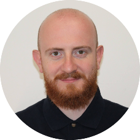

|  |
Perica MilunićCNC Programmer at Elas Metalexpert |
My first job in the company was as a CNC operator on a CO2 laser. I went through the necessary training in the
company and after a few months I was able to operate and work on the machine independently. I worked as a CNC
laser operator for one year and eight months. After that period, due to exceptional commitment and improvement
of my knowledge, I moved to the position of CNC programmer for CO2 laser. There I just continued to expand my
knowledge in the field of CNC machines. Over time, I also mastered the programming of CNC punches, fiber lasers
and milling machines. I currently have the following knowledge:
I have had a love for video games since my early childhood. I like sports simulations and adventure games the most. Favorite games include Pro Evolution Soccer, GTA series, Red Dead Redemption series and Uncharted series. Besides video games, I like to play soccer and basketball recreationally. I also like to go hiking. He singled out climbing on the Vranica mountain and its highest peak, Nadkrstac, which is 2112 meters above sea level, as his greatest success. When I have the chance I like to go for a walk. My favorite destinations in Banja Luka are Banj Brdo and Suturlija Nature Park. At the very top of Banj hill there is a monument to fallen soldiers.
| Dates | Work |
|---|---|
| 2011-2012 | Blue Star |
| 2012-2023 | Elas Metalexpert |
| CNC programming | ⭐⭐⭐⭐⭐ | Solidworks | ⭐⭐⭐ |
| Autocad | ⭐⭐⭐ | Microsoft Office | ⭐⭐⭐⭐ |